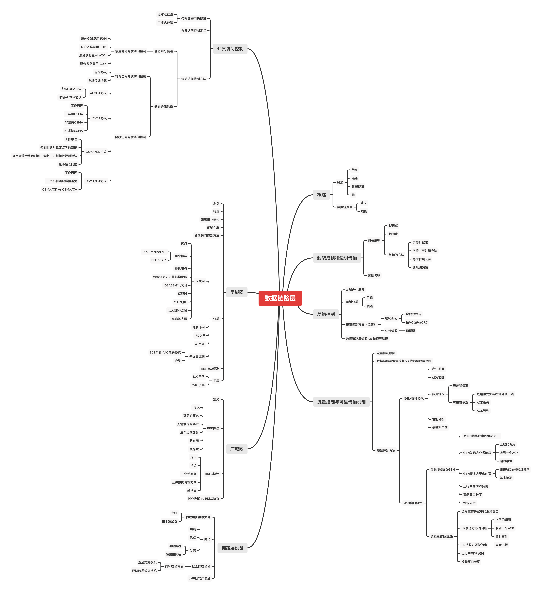
1 概述
结点：主机、路由器
链路：网络中两个结点之间的物理通道，链路的传输介质主要有双绞线、光纤和微波，分为有线链路和无线链路。
数据链路：网络中两个结点之间的逻辑通道，把实现控制数据传输协议的硬件和软件加到链路上就构成数据链路。
帧：链路层的协议数据单元，封装网络层数据报。
数据链路层负责通过一条链路从一个结点向另一个物理链路直接相连的相邻结点传送数据报。
数据链路层在物理层提供服务的基础上向网络层提供服务，最基本的服务是将源自网络层来的数据可靠地传输到相邻结点的目标机网络层。主要作用是加强物理层传输原始比特流的功能，将物理层提供的可能出错的物理连接改造为逻辑上无差错的数据链路，使之对网络层表现为一条无差错的链路。
数据链路层的功能：
- 为网络层提供服务。无确认无连接服务，有确认无连接服务，有确认面向连接服务。
- 链路管理。连接的建立、维持、释放（用于面向连接服务）。
- 组帧。
- 流量控制。
- 差错控制（帧错/位错）。
2 封装成帧和透明传输
封装成帧：在一段数据的前后部分添加首部和尾部构成帧。接收端在收到物理层上交的比特流后，根据首部和尾部的标记，从收到的比特流中识别帧的开始和结束。
首部和尾部包含许多控制信息，作用是：帧定界（确定帧的界限）。
帧同步：接收方应当能从接收到的二进制比特流中区分出帧的起始和终止。
组帧的方法：
- 字符计数法
- 字符（节）填充法
- 零比特填充法
- 违规编码法
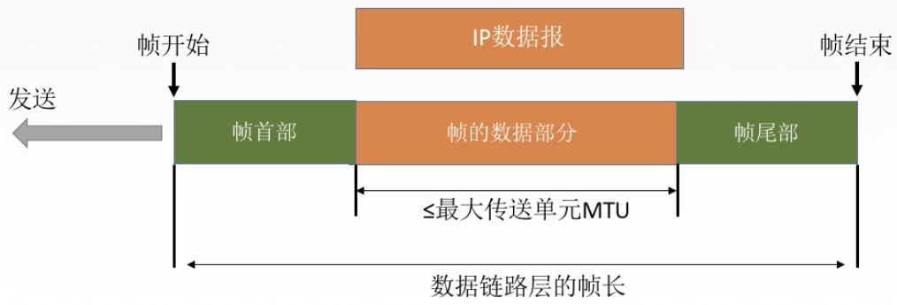
透明传输：不管所传数据是什么样的比特组合，都应当能在链路上传输。
当所传数据的比特组合恰巧与某个控制信息一样时要采取措施，使接收方不会将这样的数据认为是某种控制信息，以保证数据链路层的透明传输。。
- 字符计数法：帧首部使用一个计数字段（第一个字节，八位）来标明帧内字符数。但是鸡蛋装在一个篮子里，很容易出错。
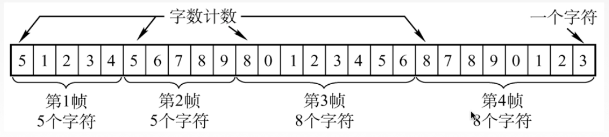
- 字符填充法：
问题来源：
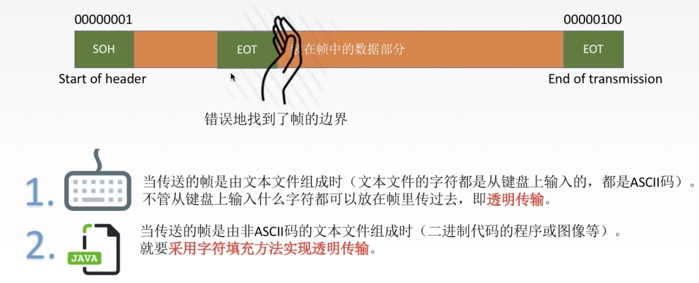
解决方法：

- 零比特填充法：
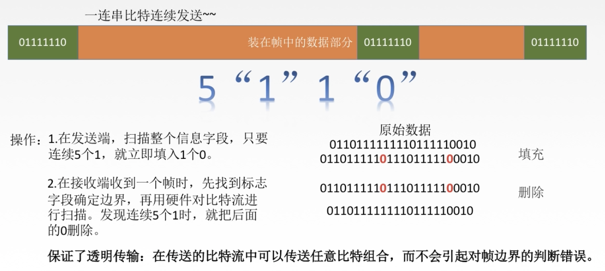
- 违规编码法：

字节计数法中Count字段的脆弱性及字符填充法实现上的复杂和不兼容，目前普遍使用的是零比特填充和违规编码法。
3 差错控制
传输中的差错由噪声引起：
- 全局性：由于线路本身电气特性所产生的随机噪声（热噪声），是信道固有的随机存在的。
- 解决办法：提高信噪比来减少或避免干扰。
- 局部性：外界特定的短暂原因所造成的冲击噪声，是产生差错的主要原因。
- 解决办法：利用编码技术。
差错：
- 位错：比特位出错，1变0，0变1。
- 帧错：发送123
- 丢失：收到13
- 重复：收到1223
- 失序：收到132
数据链路层为网络层提供服务。无确认无连接服务，有确认无连接服务，有确认面向连接服务。
- 通信质量好，有线传输链路：无确认无连接服务。如果有差错，交给上层协议比如传输层来完成。
- 通信质量差，无线传输链路：有确认无连接服务，有确认面向连接服务。
差错控制（位错）：
- 检错编码
- 奇偶校验码
- 循环冗余码CRC
- 纠错编码
- 海明码
数据链路层编码 vs 物理层编码
- 数据链路层编码针对一组比特，通过冗余码技术检查一组二进制比特串在传输过程中是否出现差错。
- 物理层编码针对单个比特，解决传输过程中比特同步的问题，比如曼彻斯特编码。
3.1 检错编码
奇偶校验码：

奇偶校验码只能检查出奇数个比特错误，检错能力为50%。
CRC循环冗余码：


链路层使用CRC检验能够实现无比特差错的传输，但是只能做到对帧的无差错接收，这不是可靠传输，因为错误的帧都被丢弃，发送端发送的全部数据并没有全部被接收。
3.2 纠错编码
海明码：可以发现双比特错，只能纠正单比特错。
工作流程：
- 确定校验码位数r
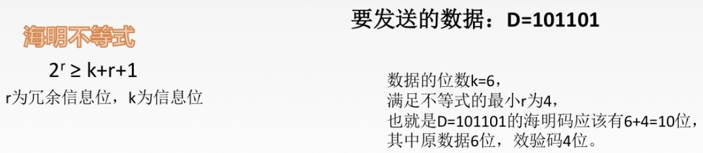
- 确定校验码和数据的位置

- 求出校验码的值

- 检错并纠错

4 流量控制与可靠传输机制
较高的发送速度和较低的接收能力不匹配会造成传输出错，因此流量控制是数据链路层的重要工作。
数据链路层流量控制 vs 传输层流量控制
- 数据链路层的流量控制是点对点的，而传输层的流量控制是端到端的
- 数据链路层的流量控制手段是接收方收不下就不回复确认，传输层流量控制手段是接收端给发送端一个窗口公告。
流量控制方法：
- 停止等待协议
- 滑动窗口协议
- 后退N帧协议GBN
- 选择重传协议SR


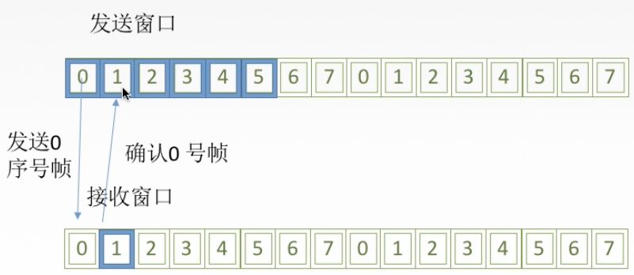
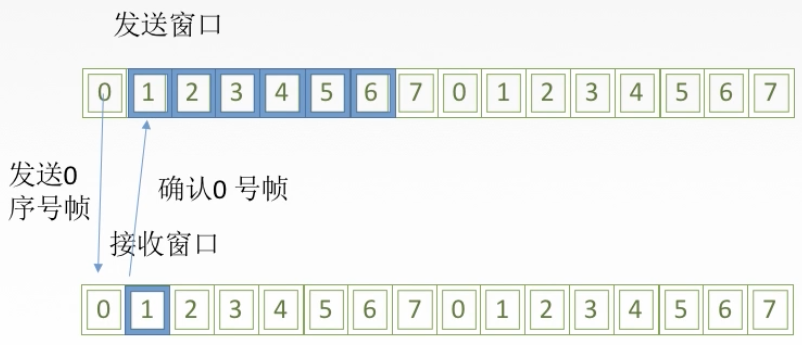
停止等待协议也是一种特殊的滑动窗口协议，即发送方和接收方的窗口数量都是1。
- 停止-等待协议：发送窗口=1，接收窗口=1
- 后退N帧协议（GBN）：发送窗口>1，接收窗口=1
- 选择重传协议（SR）：发送窗口>1，接收窗口>1
数据链路层的滑动窗口协议中窗口大小是固定的，不会变化，传输层的窗口大小可能是变化的。
滑动窗口解决：
- 流量控制：收不下不给确认，想发发不了
- 可靠传输：发送方等待超时，自动重传
4.1 停止-等待协议
为什么要有停止等待协议：
- 除了比特出差错，底层信道还会出现丢包问题。
- 为了实现流量控制。
研究前提：
- 仅考虑一方发送数据，一方接收数据。（常用的实际上是全双工）
- 不纠结数据在哪一个层次传输。
- 停止等待协议就是每发送完一个分组就停止发送，等待对方确认，在收到确认后再发送下一个分组。
应用情况——
无差错情况：

有差错情况：
- 数据帧丢失或检测到帧出错

- ACK丢失

- ACK迟到
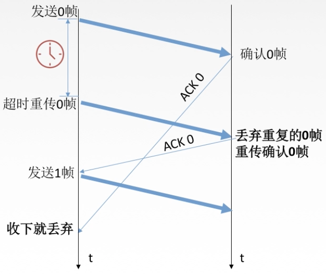
性能分析：
- 优点：简单
- 缺点：信道利用率太低
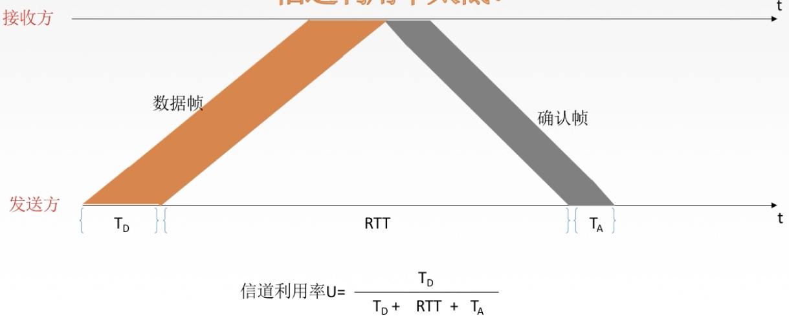
信道利用率：发送方在一个周期内，有效发送数据所需要时间占整个发送周期的比率。

4.2 后退N帧协议（GBN）
流水线：连续发送帧
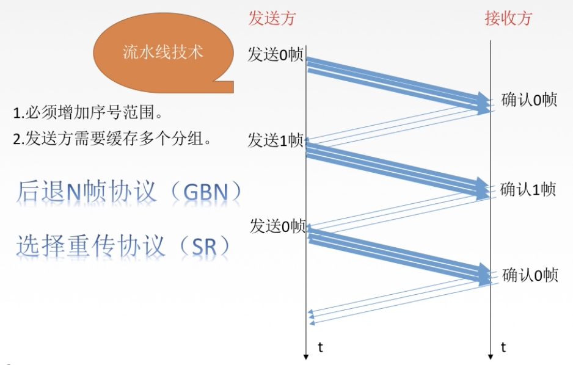
后退N帧协议中的滑动窗口：

GBN发送方必须响应：
- 上层的调用：上层要发送数据时，发送方先检查发送窗口是否已满，如果未满，则产生一个帧并将其发送，如果窗口已满，发送方将数据返回上层，暗示上层窗口已满，上层等一会再发送。实际实现时，发送方可以缓存这些数据等待窗口不满时发送。
- 收到一个ACK：GBN协议中对n号帧确认采用累积确认的方式，标明接收方已经收到n号帧和它之前的全部帧。
- 超时事件：定时器用于恢复数据帧或确认帧的丢失，出现超时时，发送方重传所有已发送但未被确认的帧，即后退N帧。
GBN接收方要做的事：
- 如果正确收到n号帧并且按序，那么接收方为n帧发送一个编号为n的ACK，并将该帧中的数据部分交付给上层。
- 其余情况都丢弃帧，并为最近按序接收的帧重新发送ACK。接收方无需缓存任何失序帧，只需维护一个信息：expectedseqnum（下一个按序接收的帧序号）。
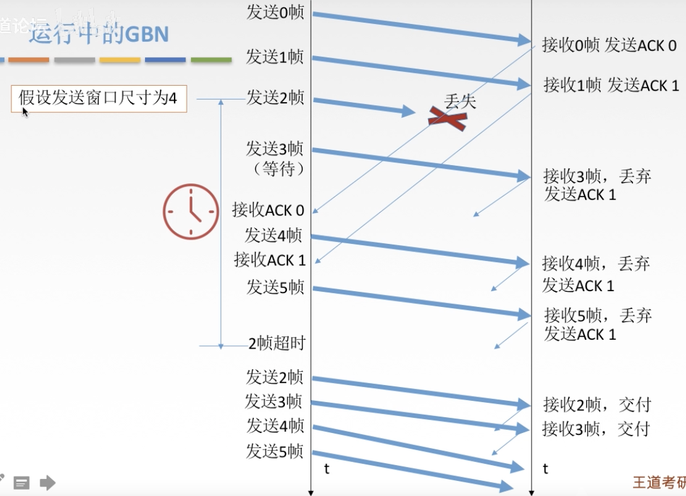
滑动窗口的长度：如果采用n个比特对帧编号，那么发送窗口的尺寸Wt应满足1<=Wt<=2^n - 1。如果窗口尺寸过大，就会使得接收方无法区别新帧和旧帧。
性能分析：
- 优点：连续发送数据帧，提高了信道利用率。
- 缺点：在重传时必须把原来已经正确传送的数据帧重传，传送效率降低。
4.3 选择重传协议（SR）
选择重传协议中的滑动窗口：
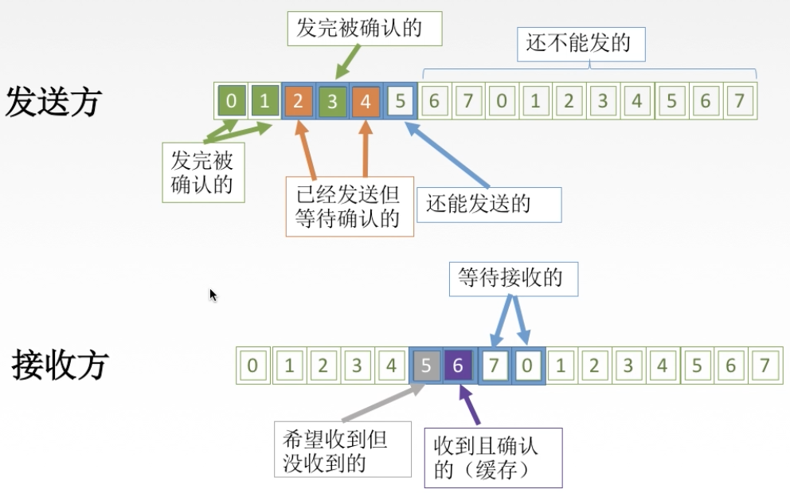
注意：图中上下无关（两个例子）
SR发送方必须响应：
- 上层的调用：从上层收到数据后，SR发送方检查下一个可用于该帧的序号，如果序号位于发送窗口内，则发送该数据帧，反之则类似于GBN，要么缓存数据，要么返回给上层之后再传输。
- 收到一个ACK：如果收到ACK，假如该帧序号在窗口内，则SR发送方将那个被确认的帧标记为已接收。如果该帧是窗口的下界（最左边第一个窗口的序号），则窗口向前移动到具有最小序号的未确认帧处。如果窗口移动了并且有序号在窗口内的未发送帧，则发送这些帧。
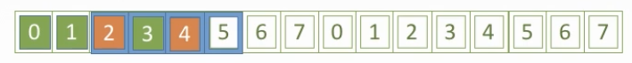

- 超时事件：每个帧有自己的定时器，一个超时事件发生后只重传一个帧。
SR接收方要做的事：
- 来者不拒（接收窗口内的帧）：SR接收方确认一个正确接收的帧而不管其是否按序。失序的帧将被缓存，并返回给发送方一个该帧的确认帧（收到谁确认谁），直到所有帧（即序号更小的帧）都被收到为止，这时才可以将一批帧按序交付上层，然后向前移动滑动窗口。
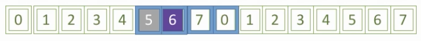
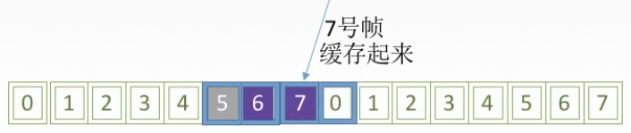
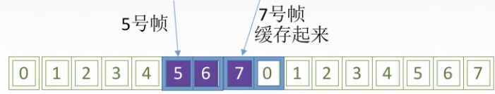
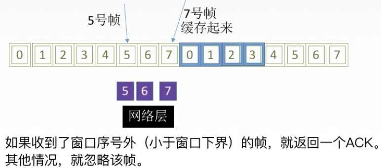
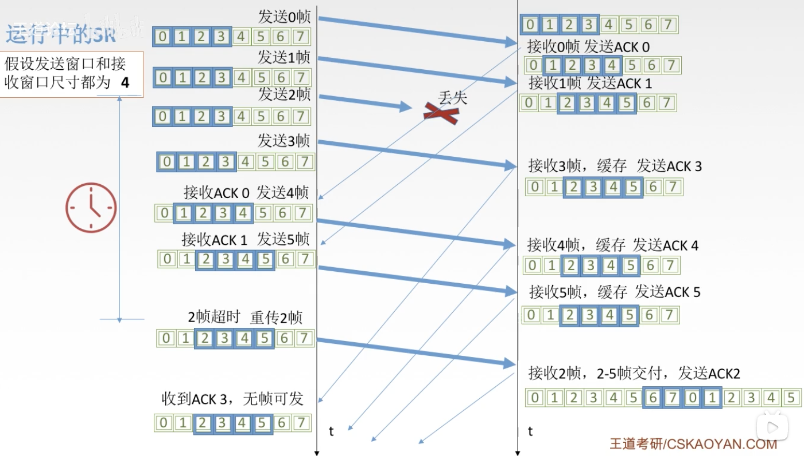
滑动窗口长度：
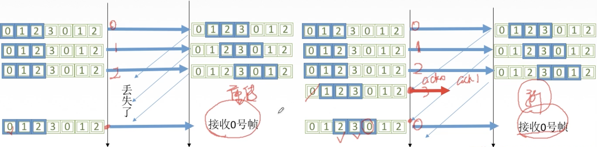
问题出现：无法判断收到的帧是重传的帧还是新的帧。
发送窗口最好等于接收窗口（大了溢出，小了没意义）。
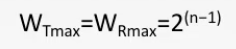
5 介质访问控制
传输数据使用的两种链路：
- 点对点链路：两个相邻结点通过一个链路相连，没有第三者。比如：PPP协议，常用于广域网。
- 广播式链路：所有主机共享通信介质。比如：早期的总线以太网，无线局域网，常用于局域网。典型拓扑结构是总线型，星型（逻辑总线型）。
介质访问控制：采用一定措施，使得两对节点之间的通信不会发生互相干扰的情况。
- 静态划分信道：信道划分介质访问控制
- 频分多路复用 FDM
- 时分多路复用 TDM
- 波分多路复用 WDM
- 码分多路复用 CDM
- 动态分配信道
- 轮询访问介质访问控制
- 令牌传递协议
- 随机访问介质访问控制
- ALOHA协议
- CSMA协议
- CSMA/CD协议
- CSMA/CA协议
- 轮询访问介质访问控制
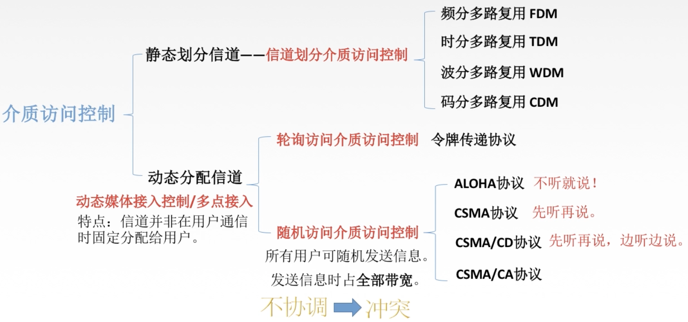
5.1 信道划分介质访问控制
信道划分介质访问控制：将使用介质的每个设备与来自同一信道上的其他设备的通信隔离开，把时域和频域资源合理分配给网络上的设备。

频分多路复用FDM：
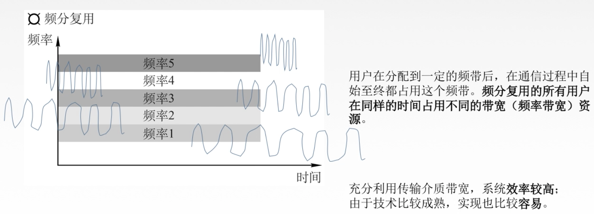
时分多路复用TDM：
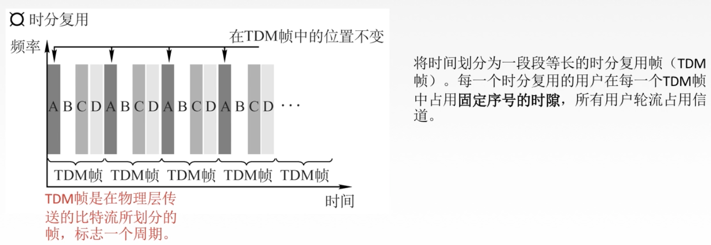
改进的时分复用——统计时分复用STDM：
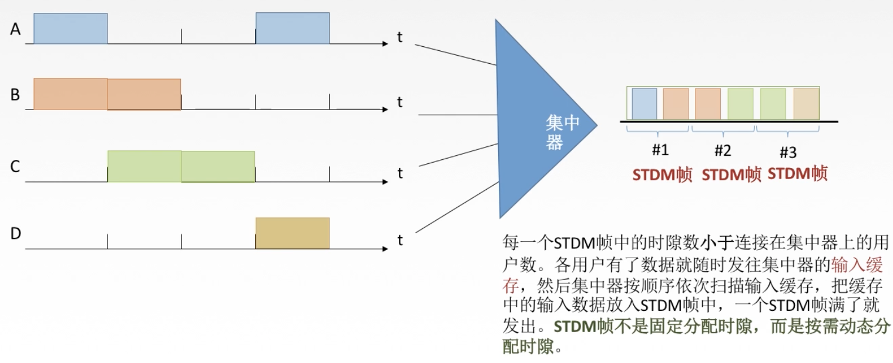
波分多路复用WDM：光的频分多路复用
码分多路复用CDM：码分多址（CDMA）是码分复用的一种方式。

5.2 ALOHA协议
动态分配信道（动态媒体接入控制/多点接入）特点是：信道并非在用户通信时固定分配给用户，其中的随机访问介质访问控制使得所有用户可随机发送信息，发送信息时占全部带宽，但是会出现不协调的冲突，需要被解决。
ALOHA协议：
- 纯ALOHA协议
- 时隙ALOHA协议
纯ALOHA协议：
- 思想：想发就发。不监听信道，不按时间槽发送，随机重发。

冲突如何检测：如果发生冲突，接收方会检测出差错，然后不予确认，发送方在一定时间内收不到确认就判断发生冲突。
冲突如何解决：超时后等一随机时间再重传。
时隙ALOHA协议：
- 思想：控制想发就发的随意性。把时间分成若干个相同的时间片，所有用户在时间片开始时刻同步接入网络信道，若发生冲突，则必须等待下一个时间片开始时刻再发送。
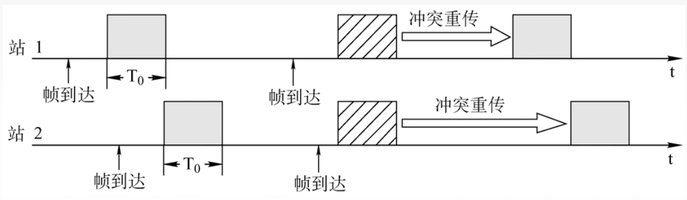
注意：
- 纯ALOHA协议比时隙ALOHA吞吐量更低，效率更低。
- 纯ALOHA协议想发就发，时隙ALOHA只有在时间片段开始才能发。
5.3 CSMA协议
CSMA（carrier sense multiple access）载波监听多路访问协议。
- CS：载波监听，每一个站点在发送数据前先检测一下总线上是否有其他计算机在发送数据。
- MA：多点接入，表示许多计算机以多点接入的方式连接在一根总线上。
- 协议思想：发送帧之前，监听信道。
- 监听结果
- 信道空闲：发送完整帧
- 信道忙：推迟发送
1-坚持CSMA：坚持指的是对于监听信道忙之后的坚持。
- 思想：如果一个主机要发送消息，那么先监听信道。
- 空闲：直接传输，不必等待。
- 忙：一直监听，一空闲马上传输。
- 冲突（一段时间没收到回复）：等待一个随机长的时间再监听，重复上述过程。
- 优点：只要媒体空闲，站点就马上发送，避免了媒体利用率的损失。
- 缺点：如果两个或两个以上站点有数据要发送，冲突不可避免。
非坚持CSMA：非坚持指的是监听信道忙之后就不继续监听。
- 思想：如果一个主机要发送消息，那么先监听信道。
- 空闲：直接传输，不必等待。
- 忙：等待一个随机时间之后再监听。
- 优点：采用随机的重发延迟时间可以减少冲突发生的可能性。
- 缺点：可能大家都在延迟等待，使得媒体处于空闲状态，媒体使用率大大降低。
p-坚持CSMA：p-坚持指的是对于监听信道空闲的处理。
- 思想：如果一个主机要发送消息，那么先监听信道。
- 空闲：以p概率直接传输，不必等待。概率1-p则等待到下一个时间槽（时间片）再传输。
- 忙：等待一个随机事件之后再监听。
- 优点：既能像非坚持算法减少冲突，也能像1-坚持算法那样减少媒体空闲时间。
- 缺点：发生冲突后还是要坚持把数据帧发送完，造成浪费。

5.4 CSMA/CD协议
CSMA/CD（carrier sense multiple access with collision detection）载波监听多点接入/碰撞检测
- CS：载波监听，每一个站点在发送数据前先检测一下总线上是否有其他计算机在发送数据。
- MA：多点接入，表示许多计算机以多点接入的方式连接在一根总线上。总线型网络。
- CD：碰撞检测（冲突检测），“边发送边监听”，适配器边发送数据边检测信道上信号电压的变化情况，以判断自己在发送数据时其他站是否也在发送数据。半双工网络。
先听后发为什么还有冲突：电磁波在总线上以有线速率传播。
传播时延对载波监听的影响：

确定碰撞后的重传时间：截断二进制指数规避算法

最小帧长问题：帧太短，会导致发送完毕才检测到碰撞，没法叫停发送。
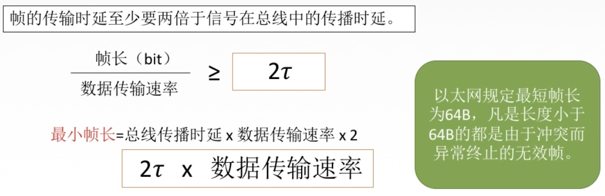
5.5 CSMA/CA协议
CSMA/CA（carrier sense multiple access with collision avoidance）载波监听多点接入/碰撞避免
- 为什么要有CSMA/CA：CSMA/CA用于无线局域网，CSMA/CD用于总线型有线局域网。
工作原理：
- 发送数据前，先检测信道是否空闲。
- 空闲：发出RTS（request to read），RTS包括发射端地址、接收端地址、下一份数据将持续发送的时间等信息。
- 忙：等待一段时间。
- 接收端收到RTS后，响应CTS（clear to send）。
- 发送端收到CTS后开始发送数据帧（同时预约信道：发送方告知其他站点自己要传多久数据）。
- 接收端收到数据帧后，用CRC来检验数据是否正确，正确则相应ACK帧。
- 发送方收到ACK可以进行下一个数据帧的发送，若没有则一直重传至规定重发次数为止（采用二进制指数规避算法来确定随机的推迟时间）。
三个机制实现碰撞避免：
- 预约信道
- ACK帧
- RTS/CTS帧（可选）
CSMA/CD vs CSMA/CA
- 相同点：都从属于CSMA，核心是先听再说。
- 不同点：
- 传输介质不同：CSMA/CD用于总线以太网（有线），CSMA/CA用于无限局域网（无线）。
- 载波检测方式不同：因为传输介质不同。
- CSMA/CD检测冲突，CSMA/CA避免冲突，二者出现冲突后都会进行有限次重传。
5.6 轮询访问介质访问控制
信道划分介质访问控制协议（MAC Multiple/Media Access Control）：基于多路复用技术划分资源
- 网络负载重：共享信道效率高，且公平。
- 网络负载轻：共享信道效率低
随机访问MAC协议：用户根据意愿随机发送信息，发送信息时可以独占信道带宽。
- 网络负载重：产生冲突开销。
- 网络负载轻：共享信道效率高，单个结点可以利用全部信道带宽。
轮询访问MAC协议：既不产生冲突，又要发送时占全部带宽。
- 轮询协议
- 令牌传递协议
轮询协议：主节点轮流“邀请”从属结点发送数据。
问题：
- 轮询开销
- 等待延迟
- 单点故障
令牌传递协议：
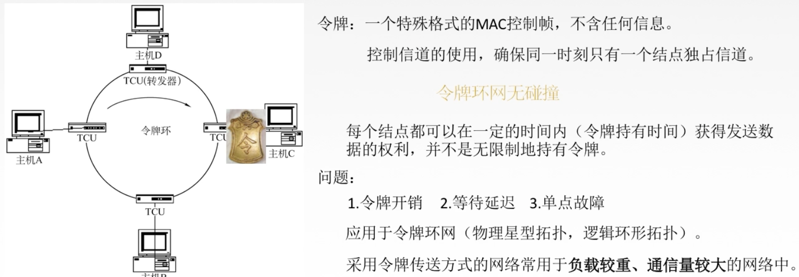
6 局域网
局域网（Local Area Network）：LAN，某一区域内多台计算机互连成的计算机组，使用广播信道。
局域网的特点：
- 覆盖地理范围小。
- 使用专门铺设的传输介质（双绞线、同轴电缆）进行联网，数据传输速率高（10Mb/s～10Gb/s）。
- 通信延迟时间短，误码率低，可靠性较高。
- 各站为平等关系，共享传输信道。
- 多采用分布式控制和广播式通信，能进行广播与组播。
决定局域网的主要要素：网络拓扑，传输介质与介质访问控制方法。
局域网网络拓扑结构：

局域网传输介质：
- 有线局域网：双绞线，同轴电缆，光纤。
- 无线局域网：电磁波。
局域网介质访问控制方法：
- CSMA/CD：常用于总线型局域网，也用于树型网络。
- 令牌总线：常用于总线型局域网，也用于树型网络。
- 把总线型或树型网络中的各个工作站按一定顺序如按接口地址大小排列成一个逻辑环，只有令牌持有者才能控制总线，才有发送信息的权利。
- 令牌环：用于逻辑上的环形局域网（物理拓扑结构是星型），如令牌环网。
局域网的分类：
- 以太网（Ethernet）：应用最广泛的局域网，按速度分为标准以太网（10Mbps），快速以太网（100Mbps），千兆以太网（1000Mbps），10G以太网。都符合IEEE802.3标准。逻辑拓扑总线型，物理拓扑是星型或扩展星型，使用CSMA/CD。
- 令牌环网（Token-ring network）：物理上采用星型拓扑结构，逻辑上是环形拓扑结构。昨日黄花，造价高，不实用。
- FDDI网（Fiber Distributed Data Interface）：传输介质使用光纤，用得很少。物理上采用双环拓扑结构，逻辑上是环形拓扑结构。
- ATM网（Asynchronous Transfer Mode）：较新型的单元交换技术，使用53字节固定长度的单元进行交换。
- 无线局域网（Wireless Local Area Network，WLAN）：采用IEEE802.11标准，通信介质是电磁波，空气传输。
IEEE 802标准：是IEEE 802 LAN/MAN标准委员会制定的局域网、城域网技术标准（1980年2月成立）。
- IEEE 802.3：以太网
- IEEE 802.5：令牌环网
- IEEE 802.8：FDDI网
- IEEE 802.11：无线局域网
MAC子层和LLC子层：IEEE 802标准所描述的局域网参考模型对应OSI参考模型的数据链路层和物理层，将数据链路层划分为逻辑链路层LLC子层和介质访问控制层MAC子层。
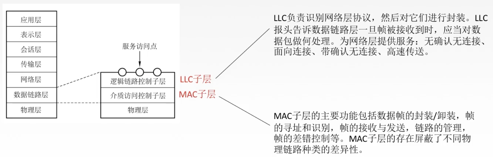
6.1 以太网
以太网（Ethernet）是由Xerox公司创建并由Xerox、Intel和DEC公司联合开发的基带总线局域网规范，是当今局域网采用的最通用的通信协议标准。以太网使用CSMA/CD技术
以太网在局域网各种技术中占统治性地位：
- 造价低廉。
- 是应用最广泛的局域网技术。
- 比令牌环网、ATM网便宜，简单。
- 满足网络速率要求：10Mbps～10Gbps
以太网的两个标准：
- DIX Ethernet V2：第一个局域网（以太网）产品规约。
- IEEE 802.3：IEEE 802委员会802.3工作组制定的第一个IEEE的以太网标准（帧格式与DIX有些微区别）。
以太网提供无连接，不可靠的服务：
- 无连接：发送方和接收方之间无“握手过程”。
- 不可靠：不对发送方的数据帧编号，接收方不向发送方进行确认，差错帧直接丢弃，差错纠正由高层负责。（以太网只实现无差错接收，不实现可靠传输）
以太网传输介质与拓扑结构发展：
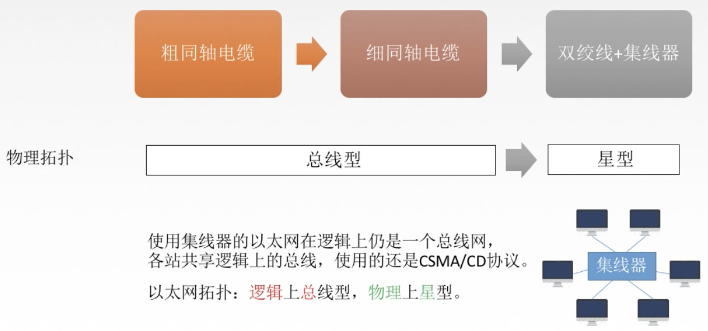
10BASE-T以太网：传送基带信号的双绞线以太网。T表示采用双绞线，现10BASE-T以太网采用无屏蔽双绞线（UTP），传输速率是10Mb/s。
- 物理上采用星型拓扑，逻辑上总线型，每段双绞线最长为100m。
- 采用曼彻斯特编码。
- 采用CSMA/CD介质访问控制。
适配器：计算机与外界局域网的连接通过通信适配器。

MAC地址：硬件地址/物理地址，标识符。每个适配器有一个全球唯一的48位二进制地址，前24位代表厂家（IEEE规定），后24位厂家自己制定，常用6组十六进制数表示。
以太网MAC帧：最常用的是以太网V2的格式。
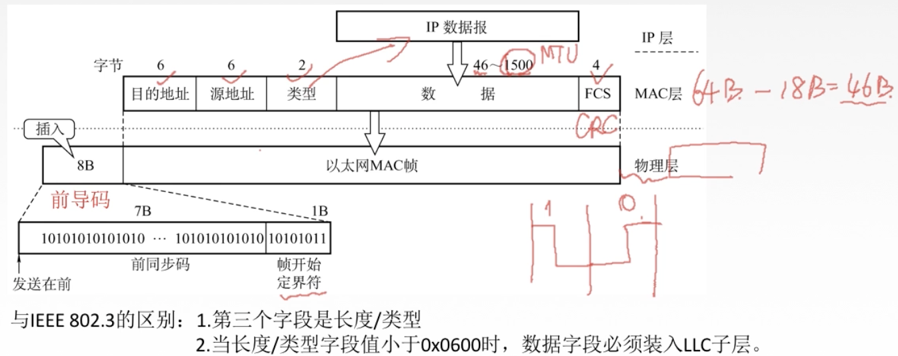
高速以太网：速率大于等于100Mb/s的以太网。
- 100Base-T以太网：在双绞线上传送100Mb/基带信号的星型拓扑以太网，，仍使用IEEE802.3的CSMA/CD协议。支持全双工和半双工，可在全双工方式下工作而无冲突（星型中间变交换机，隔离冲突域）。
- 吉比特以太网：在光纤或双绞线上传送1Gb/s的信号，支持全双工和半双工，可在全双工方式下工作而无冲突。
- 10吉比特以太网：在光纤上传送10Gb/s的信号。只支持全双工，没有冲突。
6.2 无线局域网
IEEE 802.11：无线局域网的通用标准。
802.11的MAC帧头格式：
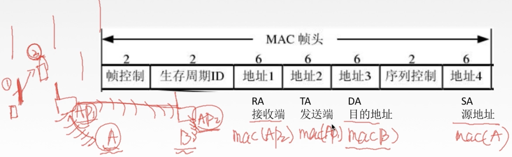
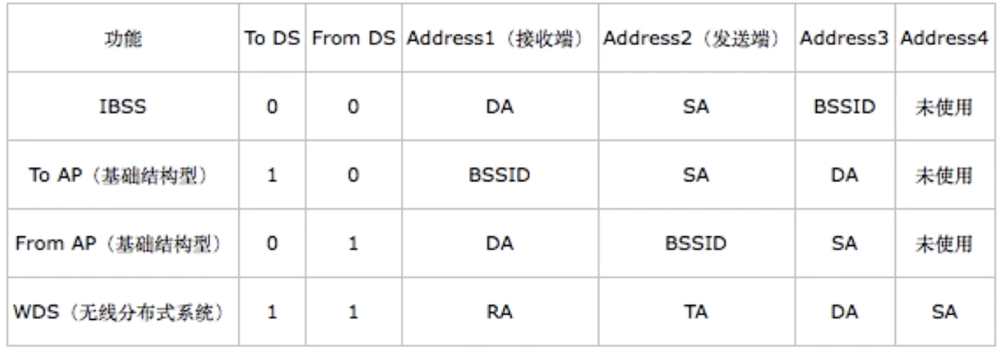
无线局域网的分类：
- 有固定基础设施的无线局域网
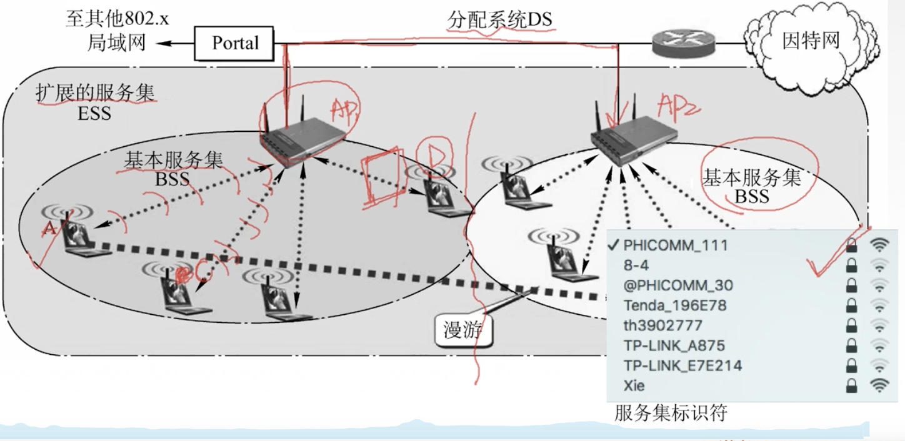
- 无固定基础设施无线局域网的自组织网络
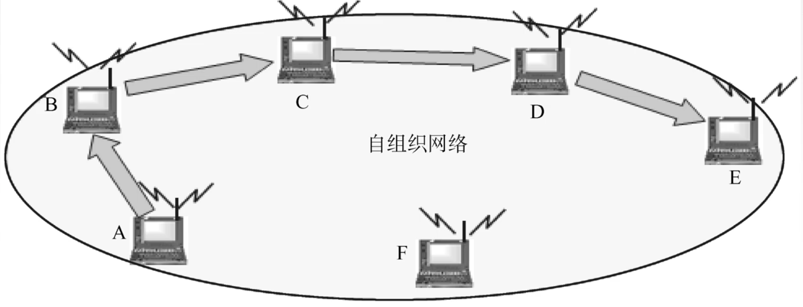
7 广域网
广域网（WAN，Wide Area Network），跨接很大物理范围，所覆盖范围从几十公里到几千公里，能连接多个城市或国家，或横跨几个洲并能提供远距离通信，形成国际性的远程网络。
广域网的通信子网主要使用分组交换技术，可以利用公用分组交换网、卫星通信网和无线分组交换网，将分布在不同地区的局域网或计算机系统互连起来，达到资源共享的目的，如因特网（Internet）是世界范围内最大的广域网。
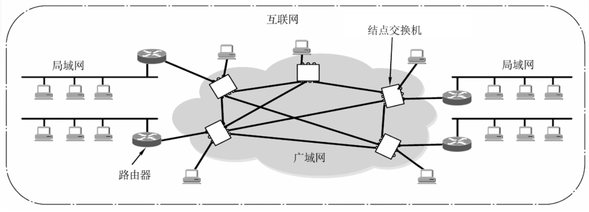
7.1 PPP协议
点对点协议PPP（Point-to-Point Protocol）：目前最广泛使用的数据链路层协议，用户使用拨号电话接入因特网时都是用PPP协议。只支持全双工链路。
PPP协议满足的要求：
- 简单：对于链路层的帧，无需纠错，无需序号，无需流量控制。
- 封装成帧：帧定界符。
- 透明传输：与帧定界符一样比特组合的数据应该如何处理？异步线路使用字节填充，同步线路使用比特填充。
- 满足多种网络层协议：封装的IP数据报可以采用多种协议。
- 满足多种类型链路：串行/并行，同步/异步，电/光…
- 差错检测：错就丢弃。
- 检测连接状态：链路是否正常工作。
- 最大传送单元：数据部分最大长度MTU不超过1500字节。
- 网络层地址协商：知道通信双方的网络层地址。
- 数据压缩协商
PPP协议无需满足的要求：
- 纠错
- 流量控制
- 序号
- 不支持多点线路
PPP协议的三个组成部分：
- 一个将IP数据报封装到串行链路（同步串行/异步串行）的方法。
- 链路控制协议LCP：建立并维护数据链路连接。身份验证。
- 网络控制协议NCP：PPP可支持多种网络协议，每个不同的网络协议都要一个相应的NCP来配置，为网络层协议建立和配置逻辑连接。
PPP协议的状态图：

PPP协议的帧格式：
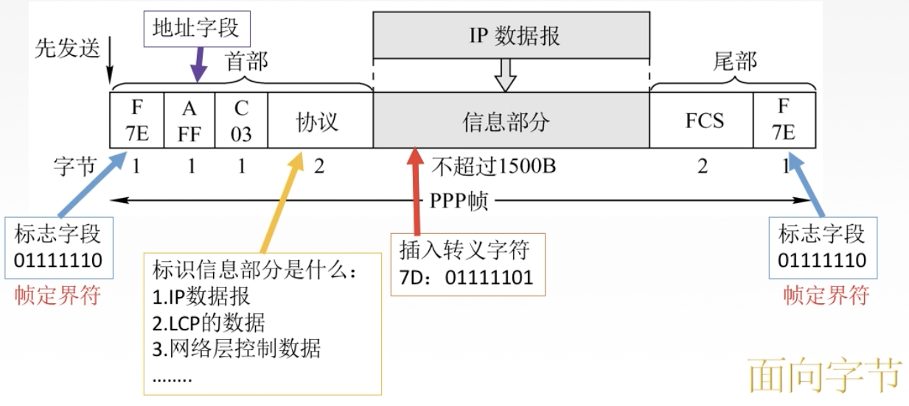
7.2 HDLC协议
HDLC协议：高级数据链路控制协议（High-Level Data Link Control HDLC），是一个在同步网上传输数据、面向比特的数据链路层协议。由ISO开发而成。
- 数据报文可透明传输，用于实现透明传输的“0比特插入法”易于硬件实现。
- 采用全双工通信。
- 所有帧采用CRC检验，对信息帧进行顺序编号，可防止漏收或重份，传输可靠性高。
HDLC的站：
- 主站：起控制作用站。
- 从站：被控制的站。
- 复合站：有控制，也能被控制。
对应三种数据方式：
- 正常响应方式：主站命令从站进行传输。
- 异步平衡方式：每一个复合站都是平等地位。
- 异步响应方式：从站可以不经过主站同意进行数据传输。
HDLC的帧格式：

PPP协议 vs HDLC协议
- 都只支持全双工链路
- 都可以实现透明传输。
- 都可以实现差错检测，但不纠正差错。
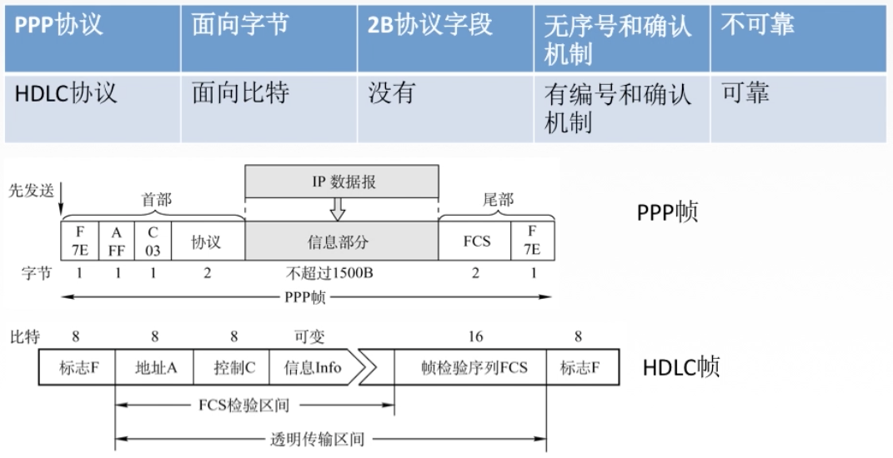
8 链路层设备
物理层扩展以太网：
- 光纤
- 主干集线器

网桥：根据MAC帧的目的地址对帧进行转发和过滤。当网桥收到一个帧时，并不向所有接口转发此帧，而是先检查此帧的目的MAC地址，然后再确定该帧转发到哪一个接口，或者丢弃。

网桥的分类：
- 透明网桥：透明指以太网上的站点并不知道所发送的帧要经过哪几个网桥，是一种即插即用的设备——自学习。

- 源路由网桥：在发送帧时，把详细的最佳路由信息（路由最少/时间最短）放在帧的首部中。
- 方法：源站以广播方式向想要通信的目的站发送一个发现帧。
多接口网桥——以太网交换机：
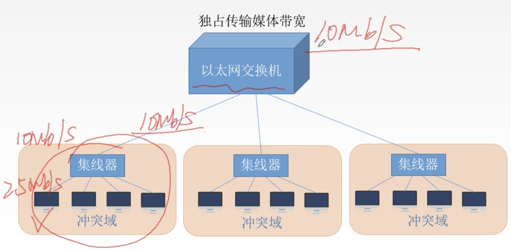
以太网交换机的两种交换方式：
- 直通式交换机
- 查完目的地址（6B）就立刻转发。
- 延迟小，可靠性低，无法支持具有不同速率的端口的交换。
- 存储转发式交换机（实际使用）
- 将帧放入高速缓存，并检查是否正确，正确则转发，错误则丢弃。
- 延迟大，可靠性高，可以支持具有不同速率的端口的交换。
冲突域和广播域：
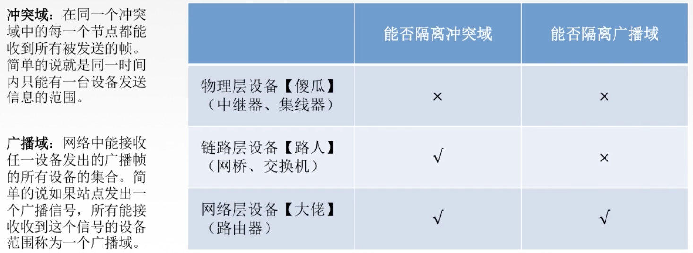
参考资料：
B站 2019 王道考研 计算机网络